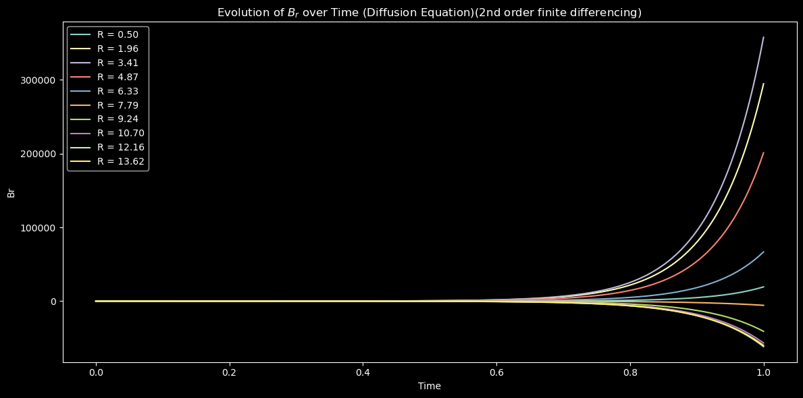
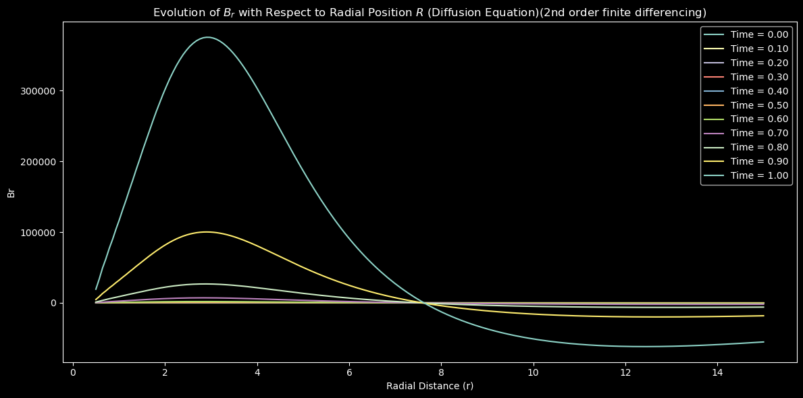
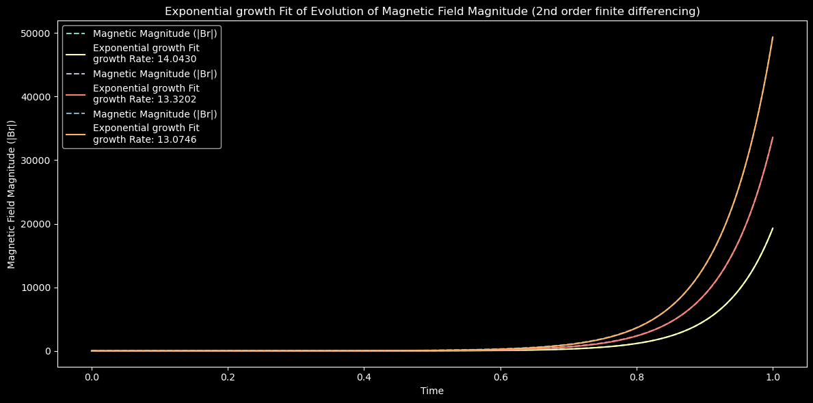
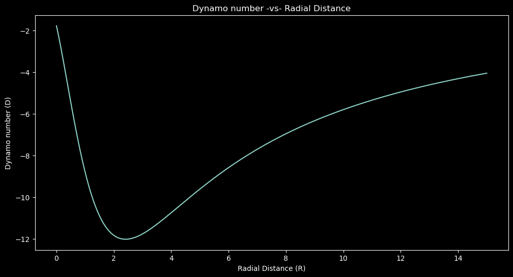

Part-2
Galactic dynamo theory seeks to elucidate the origin and evolution of magnetic fields in galaxies. At the heart of this theory lie the α and Ω effects, which are fundamental mechanisms driving the generation and amplification of magnetic fields.
The α effect, often referred to as the alpha effect, arises from the helical motion of fluid elements in the presence of turbulence or differential rotation. It describes the generation of a poloidal magnetic field from a toroidal one through the twisting and stretching of magnetic field lines. In galactic contexts, the α effect is associated with fluid motions such as differential rotation in the disk of spiral galaxies or convection in the interstellar medium. These motions can generate a small-scale magnetic field, which, through the process of turbulent diffusion, can amplify and organize into a large-scale magnetic field.
On the other hand, the Ω effect, or the omega effect, arises from the differential rotation of a galactic disk. It describes the generation of toroidal magnetic fields from poloidal ones due to the differential rotation of the disk. The differential rotation twists the magnetic field lines, leading to the amplification of the magnetic field along the azimuthal direction. This effect is particularly relevant in spiral galaxies, where the differential rotation of the disk provides the necessary shear to amplify and sustain the magnetic field.
Together, the α and Ω effects work in tandem to amplify and sustain the magnetic fields in galaxies. The α effect converts poloidal magnetic fields into toroidal ones, while the Ω effect amplifies toroidal fields and maintains the overall magnetic structure. This interplay between fluid motions, differential rotation, and magnetic fields is central to the dynamo mechanism, which underlies the observed magnetic properties of galaxies across the universe.
Implementing Ω and α effect
This Python code simulates the evolution of a magnetic field in a diffusion process using finite differencing method to solve the equations. Here's a breakdown of what each part does:
- Parameters: It sets up the parameters for the simulation, including the turbulent magnetic diffusivity (
eta_diffusivity), the maximum radial distance (R_max), the number of grid points (Nr), and the time parameters.
- Initial Magnetic Field: It initializes the radial component of the magnetic field (
Br) and the azimuthal component of the magnetic field (Bphi) using a Gaussian distribution.
- Laplacian Functions: It defines functions to compute the Laplacian of the radial component of the magnetic field (
compute_laplacian_Br) and the Laplacian of the azimuthal component of the magnetic field (compute_laplacian_Bphi).
- Evolution Calculation: It computes the evolution of the magnetic field over time using finite differencing. It iterates over each time step, computes the Laplacians, updates the magnetic field components (
Br and Bphi), and stores the evolution at each time step.
- Plotting: It plots the evolution of the radial component (
Br) and the azimuthal component (Bphi) of the magnetic field over time at different radial positions.

Following figure shows the variation of Br and B_phi with radial distance

Following figure shows three Field magnitude growth fitted with the obtained growth values shown

Variation of Dynamo number with radius
